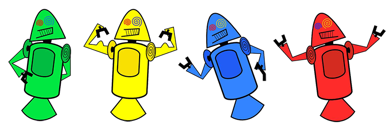

Tudo aquilo que você sempre quis saber sobre o mundo Tech, em um único lugar.
História do mascote do android
Provavelmente você sabe que o sistema operacional Android, mantido pelo Google é um dos mais utilizados para dispositivos móveis em todo o mundo. MAs talvez você não saiba que o seu simpático mascote tem um nome e uma gitória muito curiosa? Pois acompanhe esse artigo para aprender muito coisa sobre esse robozinho.
A primeira versão
A primeira tentativa de criar um mascote surgiu em 2007 e veio de um desenvolvedor chamado Dan Morrill. Ele conta que abriu o linkscape (software livre para vetorização de imagens) e criou sua própria versão de robô. O objetivo era apenas personificar o sistema apenas para a sua equipa, não pexistia nenhuma solicitação da empresa para a criação de um mascote.

Essa primeira versão bizarra foi batizada em homenagem ao seu criador: seriam os Dandroids.
Surge um novo mascote
A ideia de ter um mascote foi amadurecendo e missão foi passada para um profissional da área. A ilustradora Russa Irina Blok, também funcionária do Google, ficou com a missão de representar o pequeno robô de uma maneira mais agradável.
A ideia principal da irina era represntar tudo graficamente com poucos traços e de forma mais chapada. o desenhos também deveria gerar identificação rápida com quem o olha. Surgiu então o Bugdroid, o novo mascote do Android.
A principal inspiração para os traços do novo Bigdroid veio daqueles bonequinhos que ilustram portas de banheiros para indicar o gênero de cada porta. Conta a lenda que a artista stava criando em sua mesa no escritório do Google e olhou para o lado dos banheiros e aa indentificação foi imediata: simples, limpo, objetivo.
Quer aprender mais?
Outro assunto curioso em relação ao Android é que cada versão sempre foi nomeada em homenagem a um doce, em ordem alfabética a partir da versão 1.5 até a 9.0.
1.5 - cupcake
1.6 - Donult
3.0 - Eclair
2.2 - Froyo
2.3 - Gingerbread
3.03 - Honeycomb
4.0 - Joe Cream Sandwich
4.1 - Jelly Bean
4.4 - Kitkat
5.0 - Lolipop
6.0 - Marshmallow
7.0 - Noougat
8.0 - Oreo
9.0 - Pie
Infelizmente, o Android Q não existiu, pois o Google resolveu pôr fim a essa divertida prática e começou a usar numerações, o que deu origem ao Android 10.
Acesse aqui o site Android History para conehcer a sequência das versões "adocicadas" e o que cada uma trouxe para o sistema Androoid.
Então é isso!! Espero que você tenha gostado do nosso artigo com essa curiosidade sobre o sistema Android e seu simpático mascote.